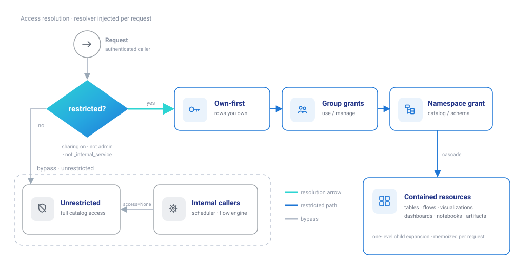
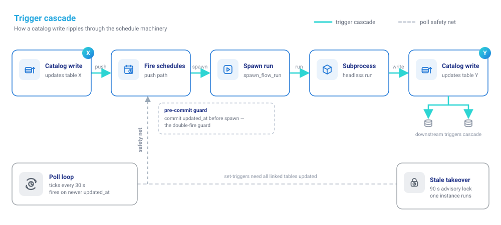
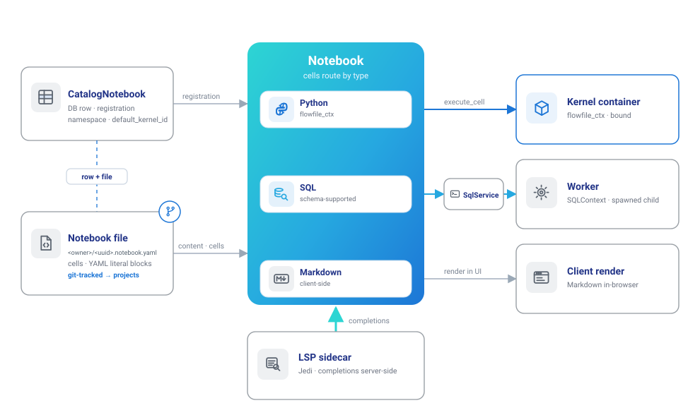

Catalog Architecture
The catalog is Flowfile's largest subsystem: namespaces, physical and virtual tables, SQL, visualizations, dashboards, notebooks, schedules, runs, artifacts, and the sharing model all live behind one facade. This page is the contributor's map — how the pieces compose, where metadata and data actually live, the resolution paths that matter, and the invariants you must not break. It pairs with Kernel Architecture and Visualizations & Graphic Walker, which own their subsystems' deep dives.
The big picture
Architecturally the catalog is two substrates and a service layer. Metadata — every namespace, table row, schedule, grant — lives in the shared SQLite catalog DB. Table data lives outside the DB as Delta directories (locally or on S3). Around those, per-domain services implement features, and everything heavy routes to neighbors: full-frame reads to the worker, user code to kernels, timed execution to the embedded scheduler.
![Catalog architecture in two layers: a thin HTTP router feeds the CatalogService facade, whose per-domain feature services — grouped as organize (namespaces, flows, tables, virtual tables, artifacts), analyze (SQL, previews, visualizations, dashboards, notebooks), and operate (schedules, runs, favorites, stats) — are how you create and query data. Beneath them a distinct storage layer holds the two substrates that persist it: a SQLite metadata DB (rows and grants) and Delta table storage (local or S3, one directory per table), linked by file_path. The scheduler and worker attach to the services; projects and kernels attach to storage.](../assets/images/guides/catalog/architecture-overview.svg)
Metadata vs data
Metadata is SQLAlchemy models in database/models.py: CatalogNamespace (two-level catalog→schema tree; level-0 rows may carry storage_uri/storage_connection_name), FlowRegistration (+ stable flow_uuid), FlowRun (with a YAML flow_snapshot), FlowSchedule + ScheduleTriggerTable, CatalogTable, CatalogTableReadLink (read-lineage), CatalogVisualization, CatalogDashboard, CatalogNotebook (metadata only — cells live on disk), GlobalArtifact (metadata only — blobs live on the kernel shared volume), engagement tables, and the polymorphic ResourceGrant layer.
Data is one Delta directory per table under storage.catalog_tables_directory (<name>_<uuid>/ with _delta_log/; legacy single .parquet files still open — delta_utils.py detects the format). A CatalogTable row points at its directory via file_path and caches schema_json, row_count, size_bytes — for optimized virtual tables file_path is NULL because there is no data on disk at all.
The S3 backend is per-catalog, not global. A level-0 namespace's storage_uri + storage_connection_name make new tables under that catalog write to object storage; existing local tables never move, and the metadata DB stays local. storage_backend.resolve_for_namespace returns a CatalogStorageTarget with two credential forms: decrypted storage_options for core's own bounded reads, and an owner-encrypted worker_interface for the worker hand-off — secrets never cross the wire in plaintext, and credentials always resolve as the catalog owner, never the calling user. FLOWFILE_CATALOG_STORAGE_URI/_CONNECTION are snapshotted onto a catalog once at creation, not read live.
Write modes and SCD2
CatalogTable.scd2_config (JSON, Scd2TableConfig in catalog_schema.py) is the single source of truth for whether a table is SCD2-tracked and what its four generated columns are named. It is written by an scd2 write (_resolve_scd2_config in flow_graph.py), preserved across a /refresh, and cleared by any other physical write mode. Every read-side consumer — the catalog reader's history filter, the reader's codegen, flowfile_frame's read path, and the reader UI and browser badges — reads this column and never a writer node's settings. The writer path (its own codegen and settings UI) supplies its own SCD2 settings, which core validates against the persisted config on every subsequent write (_SCD2_DRIFT_FIELDS), so write and read side can't disagree about column names. See Slowly Changing Dimensions for the user-facing mechanics.
The service layer
CatalogService (catalog/service.py) is a facade over composed sub-services, one per domain under catalog/services/: namespaces, flows, runs, engagement, schedules, tables, virtual_tables, sql, previews, visualizations, notebooks, stats. Composition is constructor injection with two deliberate quirks:
- Cyclic late-binding —
SqlServiceandVirtualTableServiceneed each other (SQL resolution resolves virtual tables; creating a query-virtual derives its schema by running SQL). The cycle is broken with.bind()calls after construction. - Facade back-binding — visualization/SQL/schedule services call back through the facade (
bind_facade(self)) so tests can monkeypatchCatalogServicemethods and have the patch take effect on internal paths.
Data access goes exclusively through CatalogRepository (protocol) / SQLAlchemyCatalogRepository. Services raise the CatalogError hierarchy (catalog/exceptions.py), never HTTPException; the router (routes/catalog.py, mounted at /catalog) is a thin adapter that maps exceptions to status codes via _CATALOG_EXCEPTION_MAP and builds a fresh repository + service per request. The router-level auth dependency accepts a JWT or the kernel's X-Internal-Token.
Access control
Authorization is the facade's job, implemented by AccessResolver (catalog/access.py) over auth/sharing.py:
- The router always injects a resolver, but it only restricts when
sharing_enabled() and not user.is_admin and not is_synthetic_principal(user). Electron/single-user mode, admins, the kernel's_internal_serviceprincipal, and internal callers that constructCatalogServicewithout anaccessargument (scheduler, flow execution, tests) are unrestricted. - Resolution is own-first, then group-granted: accessible ids = rows the user owns ∪ ids granted to any of their groups, at
useormanagelevel. A use-level grant is read-only —writable_namespace_idsrequires ownership or a manage grant. - Namespace grants cascade: a grant on a catalog or schema reaches the tables, flows, visualizations, dashboards, notebooks, and artifacts inside it (one-level child expansion, memoized per request). Tree listing prunes invisible items but keeps "context-only" ancestor namespaces as breadcrumbs with redacted descriptions, and stamps every DTO with its effective access level.

The delete invariant
Every resource-delete path must call sharing.delete_grants_for_resource. SQLite reuses rowids, so a surviving grant row would silently attach itself to a future, unrelated resource. The repository does this on every delete and an ORM after_delete backstop covers session.delete — but bulk query.delete() bypasses ORM events and must clean up explicitly.
Virtual tables
A catalog_writer node in virtual mode registers a table that stores no data; what gets stored decides how reads resolve later:
- At registration,
FlowGraph.check_flow_lazinesswalks the writer's upstream using each node's declaredlaziness(configs/node_store/nodes.py). If everything is lazy and no source is on cloud storage, the write is optimized: the LazyFrame plan is serialized intoCatalogTable.serialized_lazy_frame, together with the Delta versions of its source tables (source_table_versions) and a human-readablepolars_plan. - Optimized resolution deserializes that stored plan — no flow run — after
check_source_versions_currentconfirms every recorded source Delta version still matches; a stale version falls through to the standard path. - Standard resolution opens the producer flow, finds the
catalog_writernode whose configuredtable_namematches the table's name (that name-keying is what lets one producer flow back several virtual tables), and re-runs just that node (performance mode; on the worker when offload is enabled) to rebuild its output. That output is returned lazy (flowframe.lazy = True) — re-running the flow reconstructs the LazyFrame plan, it does not materialize or store data. So the two paths differ only in how they obtain the plan (deserialize a stored one vs. re-execute the flow to rebuild it); both yield aLazyFrame, and nothing collects until an actual.collect()— a write, a visualization, or a catalog query — forces it, and then only for the parts of the plan that can't stay lazy. - Serialized cloud plans are never replayed: a serialized cloud scan embeds decrypted
storage_options, soserialized_frame_uses_cloudforces such tables onto the standard path permanently.
Query virtual tables (the SQL editor's "save as virtual table") store a sql_query instead of a plan. Resolution builds a pl.SQLContext, registering every referenced table and recursively resolving nested virtuals — bounded by QUERY_VIRTUAL_TABLE_RECURSION_LIMIT = 5 plus a visited-set cycle check, with per-table grant checks in restricted mode.
![Virtual-table resolution, which always yields a lazy LazyFrame: a read checks whether the table is query-virtual (the SQLContext path, recursing up to five levels); otherwise, if the table is optimized and its source Delta versions are still current, the stored LazyFrame plan is deserialized with no flow run; if the table is not optimized, is stale, or is a cloud plan (which is never replayed), the producer flow's catalog_writer node is re-run to rebuild the plan. Both paths return a LazyFrame that stays lazy — nothing materializes until a collect (a write, a visualization, or a catalog query).](../assets/images/guides/catalog/virtual-table-resolution.svg)
SQL execution
SqlService.execute_sql_query resolves every accessible table into a name map (qualified catalog.schema.table, schema.table, and bare name when unique), materializes referenced virtual tables to IPC files via the worker, then hands the whole query to the worker: a spawned child opens the Delta directories and IPC files in a pl.SQLContext, collects at most max_rows, and returns rows. Core never collects — it ships names and paths. Cloud-backed physical tables are excluded from this path with a clear error (the in-flow sql_query node has its own resolution path that handles them). "Save as flow" generates a catalog_reader-per-table → sql_query flow and registers it.
Schedules and triggers
Schedule rows live in the shared DB, and the embedded scheduler (flowfile_scheduler/engine.py) deliberately imports nothing from core — it reads mirrored models from shared/, polls every 30 s, and coordinates instances through a single-row advisory lock with a 90 s stale-takeover.
Table triggers fire through two cooperating paths:
- Push (synchronous): catalog writes call
safely_fire_table_trigger_schedules— find enabled watchers, skip any with an active run, commitlast_trigger_table_updated_atbefore spawning (that pre-commit is the double-fire guard), then spawn the run. - Poll (safety net): every tick the scheduler compares each watched table's
updated_atwith the schedule's recorded value and fires on newer. Set-triggers require all linked tables updated since the last fire.
Fired schedules execute headlessly: spawn_flow_run creates the FlowRun row and spawns a subprocess (flowfile run flow <path> --run-id <id>, or the frozen-binary equivalent), which reports completion back through shared.run_completion — again with no core import. Maintenance operations (optimize/vacuum) deliberately keep updated_at unchanged so they never masquerade as data changes and fire triggers.

Notebooks
Notebooks are the catalog's exploration console, and architecturally they're a deliberate split-identity design: the DB row is registration, the file is the content. A CatalogNotebook row carries name, namespace placement, owner, and default_kernel_id; the cells live on disk as one deterministic YAML file per notebook at <notebooks_directory>/<owner_id>/<notebook_uuid>.notebook.yaml (catalog/services/notebook_store.py). That's the same row-plus-file pattern flows use (FlowRegistration + its .yaml), and for the same reason: it's what lets Projects version notebooks in git.
The store is built for that job — atomic writes, fixed key order, multi-line cell source dumped as YAML literal blocks so diffs read like code review, and a server-derived filename (nothing user-controlled in the path). Reads degrade gracefully: a missing or torn file yields an empty notebook and a malformed cell is skipped rather than raising, so a bad git merge on a notebook file can't brick the catalog.
Three design decisions worth knowing before touching this code:
NotebookServiceowns no execution. The cell model is mixed —python/sql/markdown, with per-cellmetadata(e.g. SQLmax_rows) — and each type routes elsewhere: SQL cells to the same/catalog/sql/executeworker path as the SQL editor, Python cells to the kernel'sexecute_cellwith the fullflowfile_ctxAPI (Kernel Architecture), Markdown rendered client-side. The shipped editor currently surfaces Python and Markdown cells (notebook/types.tsCellType); SQL cells are schema-supported ahead of the UI. The notebook service only persists.default_kernel_idis a plain string, not a foreign key. It just remembers the last kernel picked for Python cells; deleting that kernel means "nothing pre-selected," never a cascade into notebook rows.- The integer
idis the public handle: it's the grant key for sharing (catalog_notebookis namespace-scoped, so catalog grants cascade to notebooks) and the frontend derives the kernel session key from it. Thenotebook_uuidexists for the on-disk filename's stability, not for addressing.
Cell editing gets Jedi-backed code intelligence from core's LSP routes (flowfile_core/lsp/) — completions run server-side against the kernel's environment, not in the browser.

Serving flows as APIs
A registered flow can be published as an HTTP data endpoint (routes/flow_api.py): the public data_router serves GET /api/data/{slug} (API-key auth), runs the flow synchronously, and returns the output of its single api_response node as JSON. Publishing and keys are managed under /flow-api (JWT); keys belong to an API consumer — a service account that can be granted several published flows (routes/api_consumers.py). A call drives the registered flow like any other run — Core builds the LazyFrame and offloads to the worker (path ⑤ in the process map).
Neighbors
- Worker — the only sanctioned reader of full table data:
catalog_reader.open_catalog_table(Delta, local or cloud) andopen_virtual_result(IPC), invoked through core'strigger_*calls; results are collected in spawned children and returned as paths/rows, never frames. Long-lived viz session children are the same pattern specialized for Graphic Walker — see Visualizations. - Kernels — write Delta directories directly on the shared volume, read the resulting metadata from the Delta log without materializing, and POST it to core (
/catalog/tables/from-dataor/{id}/refresh); core stores the pre-computed metadata as-is and never scans the file. Kernel-exchange and artifact directories must stay under the kernel shared volume — see Kernel Architecture. - Artifacts —
GlobalArtifactrows are metadata plus astorage_key; blobs live on the kernel shared volume with versioning and soft delete. - Projects — catalog mutations fire never-raising
project_synchooks that mirror metadata (namespaces, table pointers, schedules, notebooks, model metadata — no data, no blobs, secrets as${secret:NAME}placeholders) into the active git project. The DB remains the runtime source of truth.
Invariants
| Rule | Why |
|---|---|
| Core never collects full catalog frames — worker children own dataset memory | The core/worker contract; previews are the only bounded exception |
Every delete calls delete_grants_for_resource (bulk deletes explicitly) |
SQLite rowid reuse would re-attach stale grants |
| Serialized cloud plans are never deserialized | They embed decrypted storage credentials |
| Storage credentials resolve as the catalog owner; worker payloads stay owner-encrypted | Sharing must not leak or re-key secrets |
| Catalog storage is immutable once a physical table exists; changing it requires ownership | Prevents splitting one catalog's data across backends |
sharing_enabled() reads FLOWFILE_MODE from os.environ per call |
Import-time caching would make docker-mode untestable |
optimize/vacuum never bump updated_at |
Maintenance must not fire table triggers |
| Table names reject dots | Dots are the SQL qualification separator |
Extension points
A new catalog resource type touches, in order: the model in database/models.py plus an Alembic migration (next NNN_ prefix); a ResourceSpec in sharing.RESOURCE_REGISTRY (and _NAMESPACE_SCOPED_TYPES if namespace grants should cascade to it); a sub-service under catalog/services/ wired into CatalogService.__init__; repository methods whose delete path cleans up grants; DTOs in schemas/catalog_schema.py; an exception in catalog/exceptions.py mapped in _CATALOG_EXCEPTION_MAP; router endpoints; access guards and DTO stamping; and a project_sync hook if it should be projectable.
A new schedule kind adds the schedule_type semantics and validators, a _process_* method in the scheduler's _tick, and — if push-triggered — a fan-out method in schedules.py. Keep the scheduler free of core imports; reflect any new columns via shared/models.py.
A new storage backend extends storage_backend.py (URI schemes, CatalogStorageTarget, worker payload) and mirrors the join/decrypt on the worker side in catalog_reader.py; blob artifacts implement the shared.artifact_storage.ArtifactStorageBackend ABC.